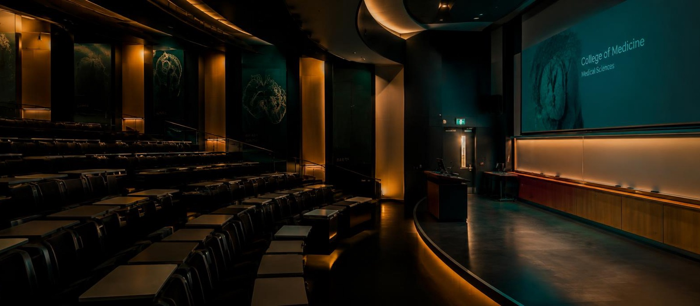

الأكثر تسجيلاًدورة خارجية
العلوم السريرية4.9
محاكاة جراحة القلب المفتوح
تدريب سريري مكثف على تقنيات المجازة التاجية واستبدال الصمامات داخل مختبر محاكاة عالي الدقة.
12 أسبوعاً84 ساعة1,840
2,450ر.س3,200
التفاصيلمنظومة تدريبية وتعليمية معتمدة تمزج بين الذكاء الاصطناعي، المحاكاة السريرية ثلاثية الأبعاد، وأحدث علوم التكنولوجيا الطبية بإشراف نُخبة من كبار الجراحين والخبراء التقنيين.
اختر بين مقررات الخطة الدراسية لطلاب الكلية والدورات المهنية المفتوحة للمتدربين من خارج الكلية، بإشراف نخبة من الاستشاريين وأطباء البورد.
تدريب سريري مكثف على تقنيات المجازة التاجية واستبدال الصمامات داخل مختبر محاكاة عالي الدقة.
بناء نماذج تشخيصية ذكية من صور الأشعة والسجلات السريرية مع تطبيقات عملية على بيانات حقيقية.
إتقان بروتوكولات رعاية المرضى في الحالات الحرجة وأجهزة التنفس الصناعي ومراقبة العلامات الحيوية.
كل ما تحتاجه لتصبح مختصاً صحياً مؤهلاً: محاكاة واقعية، محتوى معتمد، متابعة فردية، وتقنيات تقييم ذكية.
تدريب على حالات حقيقية داخل بيئة ثلاثية الأبعاد تفاعلية تُحاكي أقسام الطوارئ والعناية المركزة.
مرشد أكاديمي ذكي يشرح التشخيص خطوة بخطوة ويقترح مصادر مراجعة مخصصة لكل طالب.
قاعات افتراضية بجودة عالية مع غرف نقاش جماعية وتسجيل كامل لكل جلسة تعليمية.
لوحات تحليلية توضّح نقاط القوة والضعف في كل مقرر سريري وتقني مع توصيات فورية.
شهادات رقمية قابلة للتحقق فوراً عبر رمز QR مرتبط بسجل الطالب الأكاديمي المعتمد.
منصة سريعة الاستجابة تعمل على الحاسب والهاتف واللوحي دون الحاجة لتنزيل أي برامج إضافية.
مسار أكاديمي واضح من لحظة التسجيل حتى التخرج، مع مرشد أكاديمي مخصص لكل مرحلة.
قدّم طلبك إلكترونياً وأكمل التحقق من المؤهلات خلال 48 ساعة عبر فريق القبول الأكاديمي.
يقوم المرشد السريري ببناء خطة تعلم تناسب مستواك ووقتك وأهدافك التخصصية.
احضر المحاضرات المباشرة، وطبّق الحالات في مختبرات المحاكاة، وناقش مع زملائك في القاعات الافتراضية.
اجتز التقييمات السريرية واحصل على شهادتك الرقمية الموثّقة المعتمدة من الجهات الدولية.
أكثر من 18 ألف طالب وطالبة يبنون مستقبلهم الصحي والتقني معنا. هذه بعض شهاداتهم.
تجربة المحاكاة السريرية هنا كانت نقطة التحول الحقيقية في مسيرتي. تدرّبت على حالات معقدة قبل دخولي غرفة العمليات، مما منحني ثقة لا توصف.
المنهج التقني جمع بين الهندسة الطبية والبرمجة الحيوية بشكل متكامل. لوحات التحليل ساعدتني على فهم أدائي الأكاديمي بدقة عالية.
الدعم الأكاديمي على مدار الساعة وغرف النقاش التفاعلية جعلت الدراسة عن بُعد تجربة إنسانية قبل أن تكون أكاديمية. أنصح بها كل زميل.

أكمل طلب القبول إلكترونياً خلال 5 دقائق، وسيتواصل معك فريق الإرشاد الأكاديمي لبناء خطتك الدراسية المناسبة قبل بدء المحاضرات.